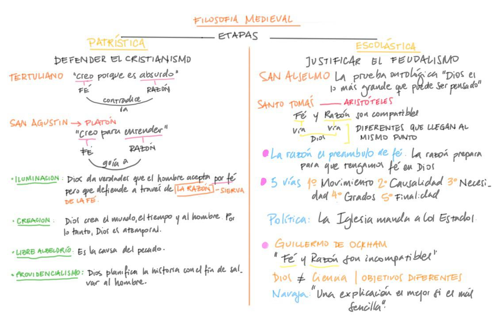

Filosofía medieval

La filosofía medieval es la filosofía producida entre el siglo V, con la patrística y la caída del Imperio romano en el 476. y el siglo XVI, con el surgimiento del Renacimiento.
Este diálogo se dio principalmente, con el surgimiento del cristianismo en occidente.El imperio Romano adoptó al cristianismo como religión oficial, y forzo a la filosofía a pasar a segundo ṕlano, en algunos casos, o incluso a integrarse con los distintos pensamientos monoteístas tanto del Cristianismo como del Islam y del Judaísmo.
Sin embargo esta integración no resultó en un oscurantismo, como muchos pensadores sostienen, sino que el periodo se vio iluminado con la aparición de grandes pensadores y teólogos latinos y de otras partes del occidente. Entre ellos podemos nombrar a figuras como San Agustin, San Anselmo o Santo Tomás así como otros personajes igualmente significativos y necesarios para comprender el desarrollo actual de la filosofía
Cristianismo y filosofía
El surgimiento del cristianismo llevó a muchos cambios al mundo occidental.Su irrupción en el escenario político obligó al Imperio Romano a aceptar al cristianismo como religión oficial, y esto implicó que se relegara a la filosofía a un segundo plano y en muchos casos, la proscripción total
A pesar de ello, la religión cristiana se valió de la filosofía para explicar y defender la fe. Esto puede verse en algunos antecedentes de la Antiguedad Tardía, por ejemplo, a partir del enlace entre filosofía y cristianismo dado en Alejandría por filósofos como Justino, Tertuliano,Clemente y Orígenes, y también en los trabajos realizados por algunos filósofos neoplatónicos.
Muchos de estos trabajos, atribuidos a un conjunto de pensadores a los que suele llamarse "padres de la iglesia", intentaron una conciliación entre ambas fuerzas rechazando distintas escuelas filosóficas. Ejemplo de ello son el escepticismo, irreconciliable con la verdad de la o el epicureísmo, opuesto a la austeridad y el sacrificio cristiano.
Las principales fuentes de la patrística (los padres de la iglesia) fueron el estoicismo y el neoplatonismo. Entre los autores más leídos se encuentran Cicerón, Séneca,San Ambrocio, Plotino y Gregorio de Nissa, entre otros.
Los padres de la Iglesia: "La Patrística"
Como bien sabemos y vimos al principio, hemos atravesado las diferentes etapas de la filosofía clásica: la etapa cosmológica, la etapa antropológica, la etapa ontológica y la helenística. Y tambien sabemos que con la caída del imperio romano, toda europa queda desprotegida al borde del abismo,sin dueños ni imperios. Es aquí donde entra la iglesia Catoĺica como la institución central que se va a apoderar del dominio de los territorios, como también del campo espiritual y filosófico.
Es por esto, que la iglesia católica interará resolver dos cuestiones: el primero es lograr el dominio y segundo es poder mantenerlo. Y con esto también y del mismo modo, tratar de resolver el problema de las dos verdades. Una de ellas es la razón y la otra la fe.Sabemos claramente que estas son incompatibles e irreconciliables ¿Cuál entonces es la relación que interará la iglesia mantener? ¿Quién manda a quien?. Eso es lo que intentaremos ver.
Partimos que tanto en la patrística como en la escolática, el tema central era Dios, por eso en esta etapa medieval predomina una visión teocéntrica (teo=dios).Particularmente, en la primera el cristianismo estaba en desarrollo, la iglesia católica en sí no existía. Aparecen en esta etapa filosofos como Tertuliano, quien va a decir "creo porque es absurdo". La fe contradice a la razón. Uno no puede entender que una persona pueda morir y resucitar a los tres días, razonablemente es imposible. Como no lo puedo entender por la razón, lo haría a través de la fe.
Otro filósofo muy representativo en esta etapa es San Agustin. La frase que representa su pensamiento es "creo para entender". Para San Agustin, la fe es algo primario. Es la fe quien conduce a la razón. Dios nos da verdades, de que él existe, de que dio a su hijo. Esas verdades la aceptamos a través de la fe pero la defendemos a través de la razón. Por lo tanto, la razón es la sierva de la fe. A esta teoría también la conocemos como la teoría de la iluminación.
Cuando Dios cuando crea a el mundo, crea el tiempo y al hombre. Esto no puede ser posible si el creador es un ser temporal, porque está dicho, que si es el principio crea todo, este ser, es un "ser atemporal". Dios está fuera del tiempo y es por esto que es eterno. Pero ¿cómo explicamos que la fé va a guiar a la razón? Esto se explica a continuación.
San Agustín y el problema de los dos Dioses
San Agustín era un cristiano devoto, pero no siempre fue así. En sus inicios San Agustín era seguidor de una doctrina oriental conocida como "maniqueísmo". Esta consistía en preguntarse algo que todos lo habremos hecho en algún momento de la vida y es la siguiente: si Dios existe y es bueno ¿porqué existe el mal? A esto los maniqueos aseguraban que coexistían en el hombre dos dioses, uno bueno espiritual y uno malo terrenal. Pero luego San Agustín abandona esta doctrina para adoptar otra muy conocida en la etapa helenística y esta es el neo-platonismo. Como esta doctrina se funda en las ideas de Platón, sucede aquí que no pueden existir dos dioses, sino Uno. Y si solo existe uno y este es bueno porqué el mal. Para San Agustin, esto no puede explicarse sino a través del libre albedrio.
Si decimos que Dios es perfecto, no puede tener imperfecciones, por lo tanto es perfecto. Y si Dios es perfecto y tiene la mejores cualidades quiere decir que es libre. Si el hombre es una creación de Dios no puede ser menos que un ser libre como su Dios. Ahora bien, el mal esta presente en el hombre y es lo que tratamos de explicar. Y la explicación aquí es que el hombre obra el mal porque lo hace con libertad, libertad para acercarse a Dios o para alejarse de él. Y cuando lo hace, entra en pecado. A esto llamamos "libre albedrio". Pero Dios no quiere que el hombre se aleje de él, más bien que se acerque porque como ya decíamos, Dios tiene las mejores cualidades, por lo tanto es bueno. Aquel que viva alejado de Dios vivirá en el pecado y lejos de la salvación. Es así que como es bueno, tiene un plan para todos, uno en que la historia de la humanidad pueda salvarse y vivir en el reino de él y en la salvación. A esta teoría, la conoceremos como "providencialismo"
La Esclástica y la defensa del dominio
Se llama Escólastica al periodo del pensamiento occidental, en el cual la Iglesia genera las escuelas, genera las universidades con el propósito de justificar el dominio feudal que esta tiene.
Como deciamos en clases anteriores, el pensamiento religioso se basa en preceptos que intentan demostrar la existencia de un Dios bueno y amoroso. Y que del mismo modo, somos creaciones de él, a imagen y semejanza. Es en este momento en el que aparece la idea de las "pruebas" de la existencia de Dios y que va a ser el eje transversal de toda esta etapa. Demostrar su existencia es el objetivo principal tanto como justificar el feudalismo.
Las figuras de San Anselmo y San Tomás
San Anselmo es uno de los pensadores más importante en este momento. Como lo son todos, pero a diferencia de los demás opta aquí por tomar los preceptos platónicos y abordar la existencia de Dios más desde un plano ontológico. Decíamos que para Platón, las cosas verdaderas existen en el pensamiento, en la razón y por lo tanto como una idea, vemos que la existencia de Dios es "a priori". San Anselmo dirá:"pensando racionalmente en el ser de Dios, nos damos cuenta de que es una entidad perfecta, y que por su grandeza y magnimidad este no puede estar adentro de las cosas...algo que es grande no puede estar dentro de algo, y si no esta dentro de algo está afuera de todo, Dios tiene una existencia objetiva. Por lo tanto Dios existe.
En cuanto a Santo Tomás, quien era un seguidor de Aristóteles, se diferencia de San Anselmo y su pensamiento racionalista, diciendo que antes que nada, la prueba de la exitencia de Dios proviene de un conocimiento de los sentidos, por lo tanto, no es un conocimiento "a priori" sino "a posteriori".
Santo Tomás igualará a este binomio fe-razón en una misma línea. Estas dos facultades son totalmente compatibles a tal punto de que, una sostendrá a la otra. Toda persona cristiana puede tratar de convencer a los demás de la existencia de Dios, pero esto es solo un intento.
Para Santo Tomás, la razón por lo tanto es preámbulo de la fe. Solo así, el hombre va a creer en Dios.Es más que claro que todas estas ideas propuestas por Tomás, estaban dirigidas a todas aquellas personas no creyentes de la fe cristiana, ya que no tenía ningún tipo de sentido tratar de convencer a los demás.
Las 5 vías de la existencia de Dios de Santo TomásLa primera tesis propuesta por Tomás es la del movimiento ya que este es el primer motor inmóvil. Luego tenemos la tesis de la causalidad; Dios es la primera causa de todo, la primera causa in-causada. La tercera tesis pone a Dios como el primer ser necesario, esta es la vía de la necesidad o también denominada, de contingencia. En cuarto lugar tenemos a la vía de los grados, Dios es el primer ser perfecto, o como decimos, los grados de perfección. Y por último, tenemos a la vía de la finalidad ya que Dios es la ordenadora de todo.
Santo Tomás, como buen domínico y cercano a la iglesia, no desconoce que las autoridades de la sociedad son el Estado y la Iglesia, considerando que el primero persigue el bienestar de las personas, del mundo terrenal, y la segunda como institución, tiene la tarea de buscar el bienestar divino y espiritual de las personas, por lo tanto, una tarea mucho más importante. Es importante saber esto ya que como veremos a continuación, aparece en escena, otro representante de la Iglesia, que no necesariamente va a pensar igual. Al contrario de Santo Tomás, este no será amigo de dicha institución, más bien los contrario.
Guillermo de OckhamGuillermo de Ockham era un franciscano, no era amigo de la iglesia. Y como tal, no va estar de acuerdo con las tesis antes mencionadas. Para él, fe y razón son incompatibles. Para probar la existencia de Dios son inútiles. Aquí separa estas dos cuestiones en cosas diferentes. Estamos en el S XIV, donde impera una Inglaterra capitalista que necesita incrementar su producción y para hacerlo necesita de un poder, un poder político. Y para hacerlo tiene que enfrentarse irremediablemente al feudalismo, es decir, a la Iglesia. Recordemos lo mencionado más arriba, Tomás representa a esta institución feudal y de ahí, sus diferencias. Volviendo al tema, y para sintetizar un poco, lo que buscaba Ockham era lograr esa ruptura, donde tenía que separar lo humano de lo religioso.
La ciencia para Ockham comienza a posicionarse como una navaja que corta con esta linealidad religiosa. La ciencia o el lenguaje de la ciencia, debe desprenderse de lo cotidiano, lo ordinario para transformarse en un lenguaje de la realidad, como lo haría el corte transversal de una navaja. Este lenguaje tiene que sacar de las cosas metafísicas, como dirían los filosofos de la etapa cosmológica, las sustancias, los átomos, el argé de la realidad.
No cabe duda que estamos ante un acontecimiento sumamente importante ya que nos encontramos en la antesala de lo que conocemos actualmente como, los comienzos de la filosofía moderna, tema que abordaremos inmediatamente luego de esta explicación.